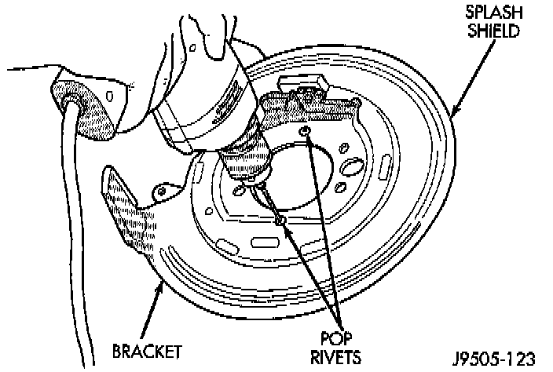
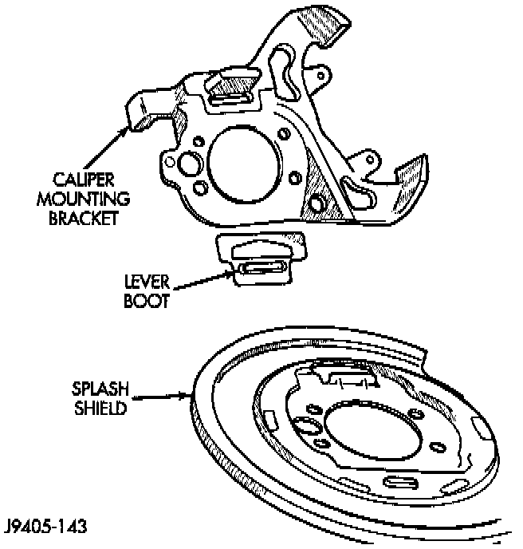

Removal
1. Raise vehicle and remove wheel and tire assembly.2. Remove caliper bolts and lift caliper off rotor and bracket. Suspend caliper from chassis or suspension component with wire.
3. Retract parking brake shoes and remove rotor.
4. Remove axle shaft.
5. Remove parking brake shoes from splash shield.
6. Remove nuts attaching splash shield and caliper bracket to axle tube flange.
7. Remove splash shield and caliper bracket from axle studs and work lever out of rear cable eyelet.
8. Mark position of splash shield and bracket for assembly reference. Use paint or scribe to mark parts.

9. Drill out rivets that retain splash shield to caliper bracket. If rivet heads did not come completely off after drilling, remove remaining pieces with small chisel. Note that the rivets do not have to be replaced at installation. The rivets are only used during manufacture to keep the boot in place during handling.
10. Note position of cam and lever for installation reference. Then remove cam and lever from splash shield and bracket.

11. Separate splash shield and caliper bracket. Then remove lever boot from bracket.